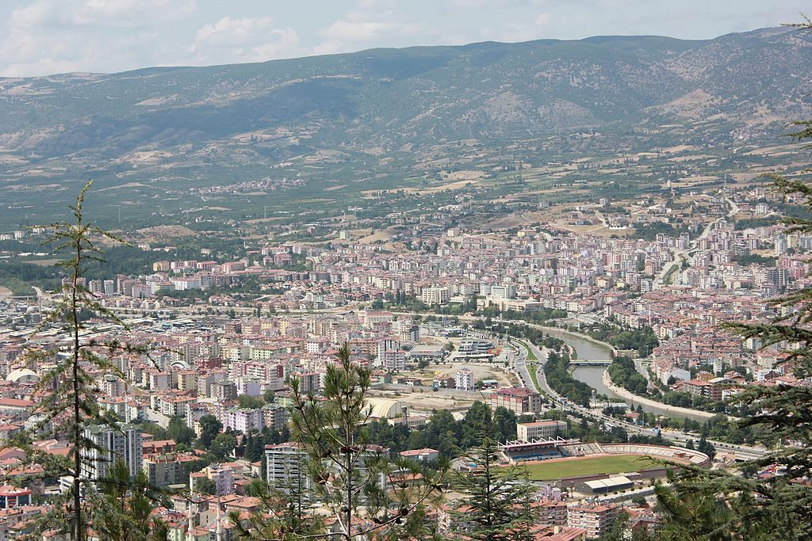
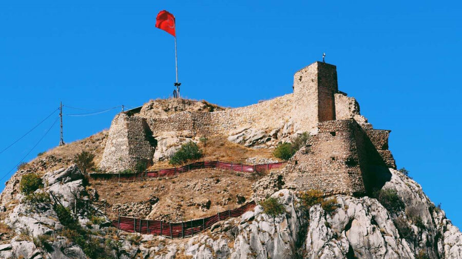
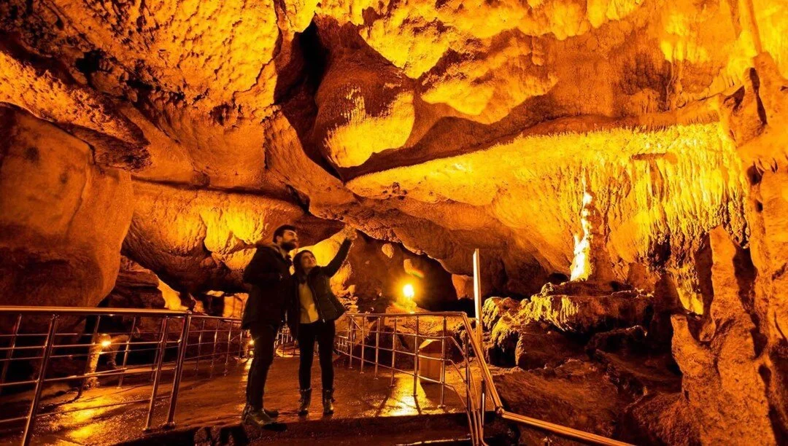

ŞEHRİM

TOKAT
Tarih boyunca Tokat'a birçok isim verilmiştir, bunlardan en çok bilinenler; Comano Pontika, Komana, Evdoksia, Dokia, Dokat, Kah-Cun, Sobaru, Darün-Nusret, Darün-Nasr ve Tokat'tır.
"Tokat" adının kaynağı hakkında değişik rivayetler vardır. Bunlar; Togayıt Türkleri tarafından kurulmuş ve ismin de buradan geldiği, bir diğeri de surlu kent manasına gelen Toh-kat'tan geldiğidir.
Evliya Çelebi ise Tokat Kalesinin Amalika Kavminden efsanevi bir kahraman olan "Dok-Ad"ın inşa ettiğini ve ''Tokat'' isminin buradan geldiğini yazmaktadır.
Tokat'ın M.Ö. 5500'lere inen bir tarihi olduğu, 14 Devlet ve 5 Beyliğin yaşayıp egemen olduğu yörede yapılan kazılarda ele geçen buluntular, yörenin Kalkolitik Çağ'dan beri yerleşime açık olduğunu göstermektedir.
Hatti, Hitit, Frig, Med, Pers, Büyük İskender, Pontus, Roma, Bizans, Arap, Danişment, Anadolu Selçuklu, İlhanlı, Beylikler, Osmanlı ve Türkiye Cumhuriyeti dönemlerinde bu topraklar hep önemli bir yerleşim alanı olmuştur.
Kaynakların verdiği bilgilere göre Malazgirt Savaşından sonra Danişmendli Beyliği kurulan bölge, 1175 yılında Selçuklulara bağlanmıştır. 1243 Kösedağ Savaşı sonrasında İlhanlı, 1335 sonrası Eretna, 1388'de Kadı Burhaneddin yönetimine giren şehir 1392'de Osmanlı topraklarına katılmıştır.
Ankara Savaşı sonrası bir süre Osmanlı idaresinden çıkan bölge 1413'de yeniden Osmanlı Yönetimine girmiştir. 1863'de Sivas Eyaletine bağlı nahiye, 1878'de Mutasarrıflık, 1920'de Müstakil Liva, 1923 yılında ise il konumuna getirilmiştir.

"TARİH VE KÜLTÜR ŞEHRİ TOKAT"
Tokat; Yeşilırmak havzasının bereketli toprakları üzerinde kurulmuş olmasının verdiği avantajla 6000 yıllık tarihi boyunca önemli bir ticaret ve kültür merkezi olmuş, 14 Devleti ve birçok Beyliği içerisinde barındırmış, önemli bir Anadolu şehridir.
Hatti, Hitit, Frig, Roma, Bizans, Danişmendli, İlhanlı, Selçuklu ve Osmanlı Dönemine kadar gelişen süreç içerisinde tarihin her dönemine ait eserleri Tokat'ın her bölgesinde bulabilmek mümkündür. Bu yönüyle Tokat bir açık hava müzesi konumundadır.

Erbaa ilçesinde antik Horoztepe yerleşimi, Hitit yerleşim yeri, Zile'de Maşathöyük Ören Yeri, Sulusaray'da; Roma-Bizans Dönemlerinin izlerini taşıyan Sebastapolis, Merkez ilçede, tarihi Komana şehri, yine Roma Döneminde yol güvenliği için kurulmuş olan Tokat Kalesi, aynı zamanda Danişmend Devletine başkentlik yapmış olan Niksar'da bulunan tarihi kale, Malazgirt sonrası yapılan en eski Türk Camisi Garipler Camii, Yağıbasan Medresesi, Gökmedrese, Yeşilırmak-Hıdırlık Köprüsü, 9 adet zaviye, Osmanlı Dönemine ait Alipaşa Camii ve Hamamı, Voyvoda Han ( Taşhan), Deveciler Hanı, Arastalı Bedesten, 18. yüzyıla ait bütün Anadolu'nun en görkemli tavan göbeğine sahip Latifoğlu Konağı Müze Evi ve Anadolu'nun en güzel ahşap Mevlevihanesi, en güzel Saat Kulesi; Bey Sokağı, Bey Hamam Sokağı, Halit Sokağı ve Sulusokak'ta bulunan sivil mimarlık örneği yapılarla; Türklerin Anadolu'ya gelişlerinden itibaren 900 yılda mimarlık adına ortaya koydukları önemli eserlerin kesintisiz olarak görülebileceği tek şehirdir TOKAT...